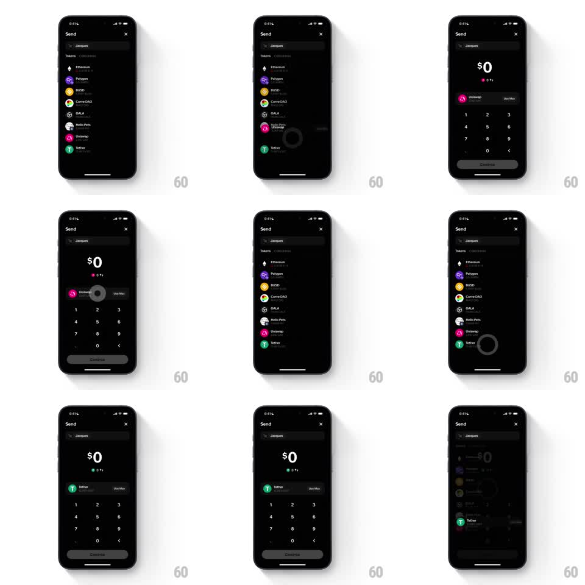

Media
Frame-by-frame

Rebuild this interaction 1:1: Family's send token picker - on the dark Send screen to Jacques, tapping a token row (Uniswap, then Tether) morphs the row into the amount screen's selected-token badge while the numpad rises, and switching tokens swaps the badge with a shared-element flip.

Rebuild this interaction 1:1: Family's send token picker - on the dark Send screen to Jacques, tapping a token row (Uniswap, then Tether) morphs the row into the amount screen's selected-token badge while the numpad rises, and switching tokens swaps the badge with a shared-element flip. ## Integration Integration: stack-agnostic spec - springs given as stiffness/damping, timed motions as duration + curve; map every value to your framework and animation library of choice. ## Scene Dark Send screen: "To: Jacques" row, Tokens/Collectibles tabs, token list (Ethereum, Polygon, BUSD, Curve DAO, GALA, Hello Pets, Uniswap, Tether - each with logo, balance, fiat value). Amount state: big "$0" with a small colored balance dot, selected-token badge (logo + name + "Use Max" pill), numpad, Continue (disabled at $0). ## Motion spec Pattern: list-item-to-badge morph with badge swap. - Tap a token row: a touch ripple flashes (dark circle, 150ms); the row's logo and name lift off the list (arc toward the badge slot, 300ms, spring ~320/20) as the list slides down and fades (200ms). - The logo lands in the badge (scale settle spring ~340/16), "Use Max" fades in beside it (150ms), and the numpad rises (250ms, spring ~300/22) while "$0" fades in above (200ms). - Switch token: re-opening the list reverses the morph; picking a different row swaps the badge - the old logo scales out (0.8, 150ms) as the new one scales in (spring ~340/16, 200ms), the name crossfading (150ms). - The balance dot under "$0" takes the token's brand color (pink for Uniswap, green for Tether) with a 200ms color ease. ## Calibration - The badge keeps the row's exact logo artwork and name typography. - The numpad appears only after a token is chosen. ## Reduced motion Badge and list crossfade (200ms); no travel arc. ## Don't miss - The ripple marks the tapped row before the morph starts. - "Use Max" is part of the badge unit, arriving with it.